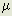

Aether Science Papers: Part I: The Creative Vacuum
Pages 10-13
Copyright © 1996 Harold Aspden
EDDINGTON'S UNIFICATION OF THE CONSTANTS
One cannot build on Einstein's foundations but one can at least take stock of Eddington's efforts and proceed from there. Eddington had the good sense to see that the clues which Nature provided to guide us forward in our search for the truth were those coded in the dimensionless numbers which link the truly fundamental constants. We will, very briefly, review that theme as it provides the platform on which much of the work here described was structured.
Sir Arthur Eddington in New Pathways in Science (see p. 232), published in 1935 by Cambridge University Press, declared that the seven primitive constants of physics, e, m, M, h, c, G and , could be reduced to three (cf. the three dimensions E, L, T) by discovering what determines the value of four purely numerical ratios:
(i) M/m (ii) hc/2 e2 (iii) e2/GMm (iv) (2c/h)
e2 (iii) e2/GMm (iv) (2c/h) (Mm/)
(Mm/)
Eddington's own thoughts on how to derive these ratios theoretically have not stood the test of time. He relied too much on what were apparently numerical coincidences and his theory could not adapt to later data found as precision measurement techniques improved. In contrast the theory which I present in the appended papers stands up extremely well, as can be expected for a theory that has really hit upon the truths of Nature's creative mechanisms.
As summarized below, the appended papers cover the first three of Eddington's ratios, but the cosmical constant has a curious definition and may prove to have no real significance owing to the vagueness of the natural radius of curvature of space-time'. I would substitute the Hubble constant as the seventh primitive constant and I point out that this also can be deduced theoretically by developing the particle creation theme leading to the M/m evaluation. [Lett. Nuovo Cimento, 41, 252, 1984].
The Hubble constant arises owing to an action occurring throughout space as the aether attempts to create matter in the form of protons and electrons, but succeeds sporadically and then usually only transiently as the particles have a momentary existence. What amounts to 'missing matter' results in that this quasi-matter exists fleetingly thoughout all space and its very presence attenuates the frequency of electromagnetic waves in transit from the stars. The aether has a non-dispersive property in this connection, because it really has two dynamic systems which keep in balance in a rather special way, as discussed in the paper just referenced.
My objective in this work is not to be drawn into contention with Big Bang theory. I prefer here to avoid the field which cosmologists find so delightful, as they harness Einstein's philosophy to describe events they can only imagine. Enough is said on that subject on page 30 ahead and in the papers at the end of this work. Instead I intend here to concentrate attention more upon the first three of Eddington's ratios.
The way in which protons can be created from activity involving muons is the subject of three papers, two of which are appended. [Nuovo Cimento, 30A, 235, 1975, Hadronic Journal, 11, 169, 1988 and Physics Essays, 1, 72, 1988]. The very close value 1836.152 of M/m, the proton/electron mass ratio, is derived theoretically but its 'fine-tuning' to even greater precision in terms of a fundamental energy quantum can become an interesting possibility in the light of our introduction.
The theoretical derivation of the dimensionless fine-structure constant giving hc/2e2 as 137.0359 is also of published record, as based on the same theoretical principles, which involve an adaptive 'fluid crystal' interpretation of the structured form of the aether. [Physics Letters, 41A, 423, 1972]. However, the summary derivation of this ratio also features in the papers appended.
This author's unification of gravitational and electrical action implicit in the third of Eddington's ratios is already of published record and affords the formulae:
G = (4e/m)g4(108)3
(g/)3 - 3(/g) = 1
= (3)7/12(M/m)
M/m is the proton/electron mass ratio. is the mass of the tau lepton in relation to the electron. [Hadronic Journal, 9, 153, 1986].
The reader is invited to substitute the measured values of the electron charge to mass ratio e/m and the measured value of the proton-electron mass ratio in these equations to deduce and then g, the graviton-electron mass ratio, to then discover that the equations really do give the correct value of G, the constant of gravitation. Clearly, the numerical ratio e2/GMm has therefore been deduced theoretically, meeting fully the objective set by Sir Arthur Eddington.
However, there is a spin-off discovery here, because this theory has yielded a measure of the mass of the tau lepton, otherwise known as the taon. Inspection of the tables of data applicable to physical constants will show that this super-heavy electron, the taon, is the big brother in the electron family, the muon being the middle brother, otherwise known as the heavy electron.
Now, I cannot, in the limited extent of this work, discuss all my published papers, but I know that there will be those who are ready to criticize what I am saying and they may pounce on the fact that the taon-electron mass ratio calculated from the above equations, using M/m as 1836.152, is 3485.21, which is a taon mass-energy of 1780.94 MeV. As can be seen from that 1986 paper of mine, just referenced (the third in the papers appended), I was, at the time that paper was written, confronting the prospect of this taon mass-energy quantity being higher than my theory indicated. In the event, referring to Physical Review D50 (August 1994), I find that the taon is now stated to have a mass-energy of 1777.1 MeV with an uncertainty of approximately 0.5 MeV.
So I am in error somewhat on this question of the mass of the super-heavy electron. However, as can be seen from the papers ahead I had a similar situation with the muon, in that my theory said that the muon-electron mass ratio should be 206.3329, whereas the actual muon-electron mass ratio is somewhat greater as 206.7683. The reason for this was fully explained as attributable to the real muon having two electron-sized companions. It needs three particles cooperating in a conservative manner, in space volume terms and energy terms, to assure a quasi-stability. [Lett. Nuovo Cimento, 37, 210 (1983) and 38, 342 (1983)].
In the sub-quantum energy activity in the aether the primary role is played by the virtual muon family which comprises a mixture of energy quanta of 205 and 207 electron rest-mass units . We find that the real muon, the one which shows itself in cosmic radiation and in high energy particle decay, is nucleated by the higher 207 form.
Now I have, above, mentioned the 'harmonics of the primes', having in mind the wave resonances and standing wave effects that can control the deployment of energy in particle groups. Such effects have been recognized in my researches in connection with the proton and neutral pion, as mentioned below. Also, in 1972, I had adopted the odd integer space volume quantization to derive the fine-structure constant [Physics Letters, 41A, 423 (1972)]. Later, the evidence pointed to the wave resonance as well, so that in 1983 I did explain why the `aether' muon or 'virtual' muon, being a bare muon, had a mass slightly below that of the real muon, the one having a electron retinue. Referenced on the integer mass ratio 207, the applicable formula, to a first approximation is:
m
/m = 207 + 2 - (9/4)(207)/(207+3)
which is 206.7687. The second Lett. Nuovo Cimento paper referenced above gave reason for 'tuning' this to a slightly lower value, bringing it into perfect accord with the measured value of 206.7683.
What I now declare as being extra proof and vindication of my research in arguing in support of the wave resonances just mentioned, is the fact that the real taon should replicate the muon situation by having a retinue of two virtual muons, whereas the muon had a retinue of two virtual leptons of electron size. The number 207 can be replaced by 17, at least to a first approximation, because the taon is that much more massive than the muon. Accordingly 17 can replace 207 in the above equation to give:
m/m = 17 + 2 - (9/4)(17)/(17+3)
which is 4.43 Mev below the value of m corresponding to the factor 17, if m/m is 207. So the 1780.94 MeV estimate of the virtual taon mass indicates a `real' taon mass of 1776.51 MeV, whereas the value, as now reported, is 1777.1 +/- 0.5 Mev.
Whilst on this theme of wave resonance governing particle mass, I feel it appropriate to mention the harmonic resonance which determined the value of the neutral pion mass. As can be seen by reference to the eleventh appended paper [Physics Essays, 2, 360 (1989)], in determining the mass of the neutral pion in relation to that of the electron, a governing resonance involves the prime number 1619.
When I wrote that paper I did not know that the neutral pion had a measured mass-energy of 134.9764 +/- 0.0006 MeV. Yet, in presenting the paper I gave reason for this mass-energy being either 134.976 MeV or 134.960 Mev, according to whether the component charges involved are well spaced apart or are in contact. Evidently, experiment tells us that they are well-spaced, but here is a very good example of the power of my theory.
The neutral pion is not foremost in importance amongst the many fundamental particles, but it does present an awesome example of the wave resonance effect. As scrunity of Table II in the paper will show, it would really upset the resonance proposition if the mass indicated was not in agreement with experiment, but it is pleasing to see that my theory is supported in a truly remarkable way. I just hope that the reader can come to appreciate what I am saying and so share my enjoyment at having deciphered the physics of Nature's handiwork in this particular particle situation.
As to the 'harmonics of the primes', the best example in the papers appended is the seventh appended paper [Hadronic Journal, 11, 169 (1988)]. The numbers 23, 41 and 1153 are all prime. They relate to the properties of the proton and I can but declare my delight at having deciphered the secrets of the proton as codified in the limited but highly precise numerical data which those highly skilled in precision measurement have afforded.
Sir Arthur Eddington could not have imagined what would prove to be possible once the quantities in which he was interested had been measured to a precision below the part per million level. The numbers do not explain anything, but as they extend in their limits of precision they make the task of explanation all the more formidable. It is only if one has the right interpretation of them in physical terms that one can hope to derive theoretical values which match up to those observed. However, once on track, one knows one has discovered the governing truths and it certainly gives one confidence in spreading the theoretical investigation across the myriad of particle forms that Nature produces.
How else can it be that the substance of the papers which are appended could have emerged so readily? One cannot sit down and `invent' realistic physical ways of deciphering the particle spectrum, just by willful determination. One can, however, if given one point of entry that is well-founded, build on that and hope to find that it does, of itself, build a particle spectrum that fits the one observed. This has proved to be the case. It has not involved use of Einstein's theory, which tells us something we should not fail to heed, but that was not how I entered into these studies.
In simple truth, I wanted to understand how energy was stored by magnetic induction and I did not believe that the route to that understanding could in any way ignore the reality of the presence of the aether. To me, mathematical symbols, though useful if one can picture something tangible that they represent, are meaningless if devoid of substantive reality. The aether is real and it deserves respect!
�


The author's E-Mail address is:
h.aspden@physics.org